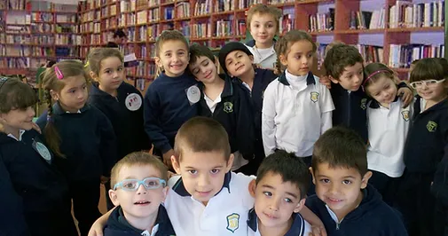

P R I M A R I A
Nuestro Proyecto Educativo
Esta etapa exige un compromiso especial para afianzar hábitos de buena convivencia, tanto para uno mismo como para los demás. Es fundamental fortalecer la autoestima, potenciar la curiosidad, la creatividad y el entusiasmo, y estar atentos a las características específicas de cada edad, tomando el contexto familiar y social como referencia. Es vital diferenciar el estilo de aprendizaje de cada alumno, identificando sus potencialidades y dificultades con el fuerte compromiso de que se conviertan en amantes del aprendizaje a lo largo de toda su vida.
Nuestra proyecto bilingüe
Nuestro proyecto bilingüe oficial permite desarrollar un programa educativo integral que articula y complementa los idiomas inglés y castellano a través de diversas materias. En esta etapa, la comprensión lectora y la oralidad son fundamentales, ya que el dominio de ambos idiomas facilita el acceso y la integración de conocimientos en distintas áreas del aprendizaje sentando las bases para una Secundaria sólida. Este enfoque no solo fortalece las habilidades lingüísticas, sino que también fomenta el desarrollo de competencias clave como el pensamiento crítico, la capacidad de comunicación efectiva, la resolución de problemas y la creatividad. A medida que los estudiantes avanzan en su formación bilingüe, adquieren herramientas valiosas para enfrentar desafíos académicos y profesionales en un entorno globalizado. Fomentamos una comunidad saludable y activa que valora el ejercicio y la educación positiva para promover el bienestar integral de nuestros estudiantes.
Como Ciudadanos del Mundo, cultivamos el pensamiento bilingüe y la ciudadanía digital responsable, promoviendo la flexibilidad social y el emprendedurismo. Nuestros estudiantes desarrollan habilidades para adaptarse a un entorno globalizado y digital, preparándolos para ser líderes conscientes y responsables.
A través del Aprendizaje Basado en Proyectos e Indagación (ABPI) fomentamos el pensamiento crítico, las competencias comunicativas, el trabajo colaborativo, la autonomía, la curiosidad y la investigación. Preparándolos para enfrentar los desafíos del futuro con confianza, habilidades y competencias relevantes.